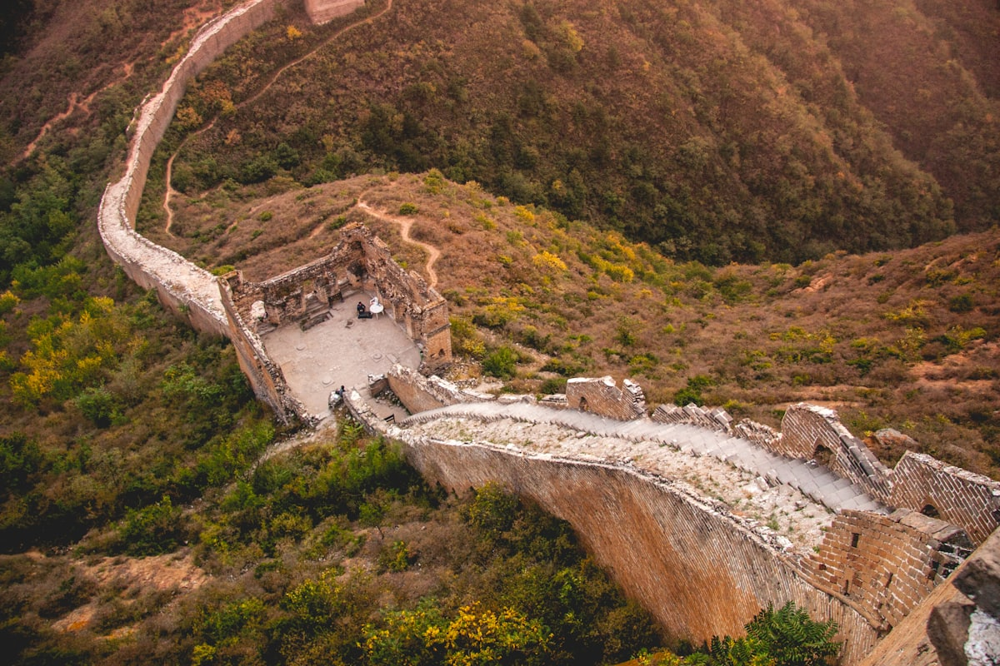
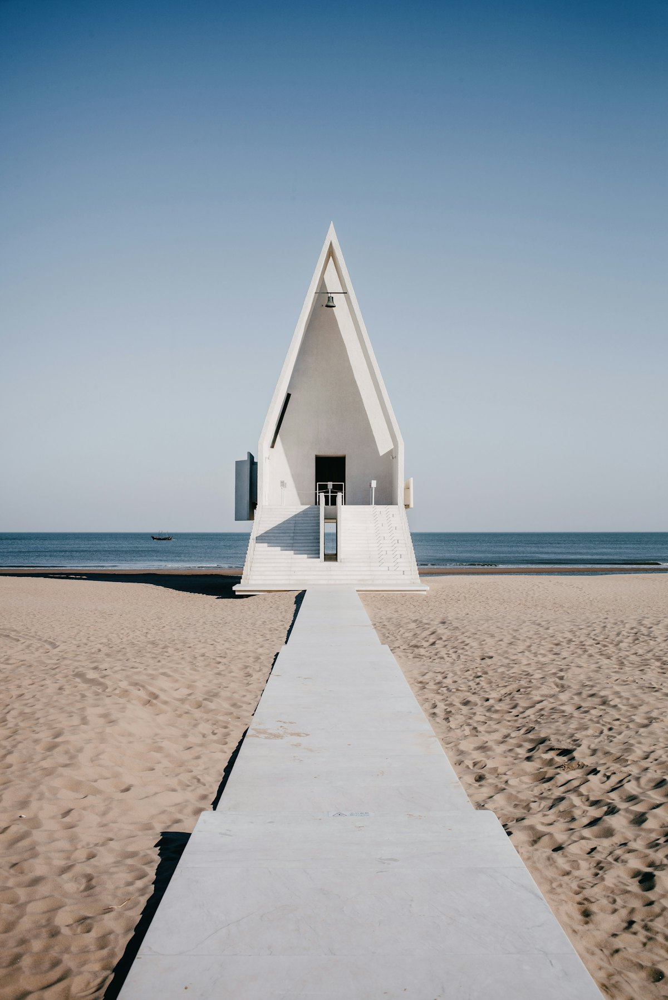
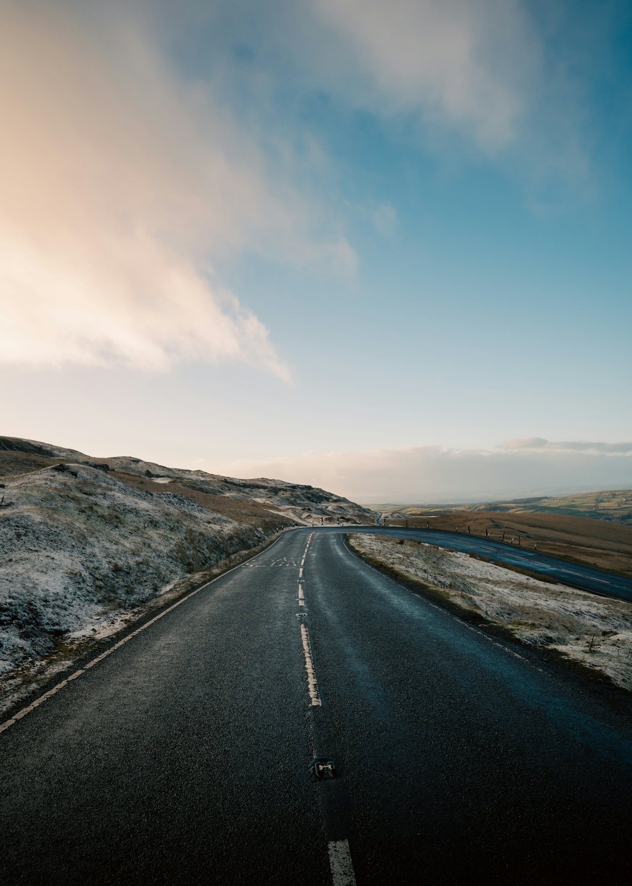
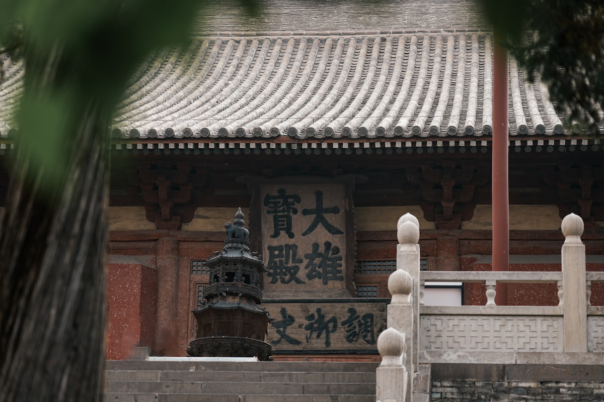
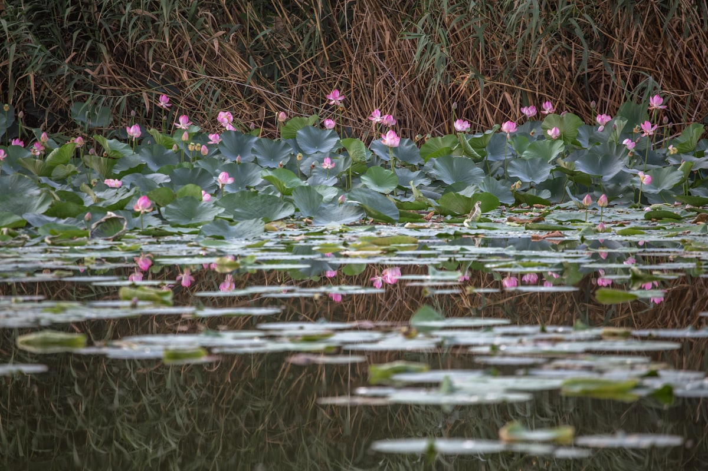
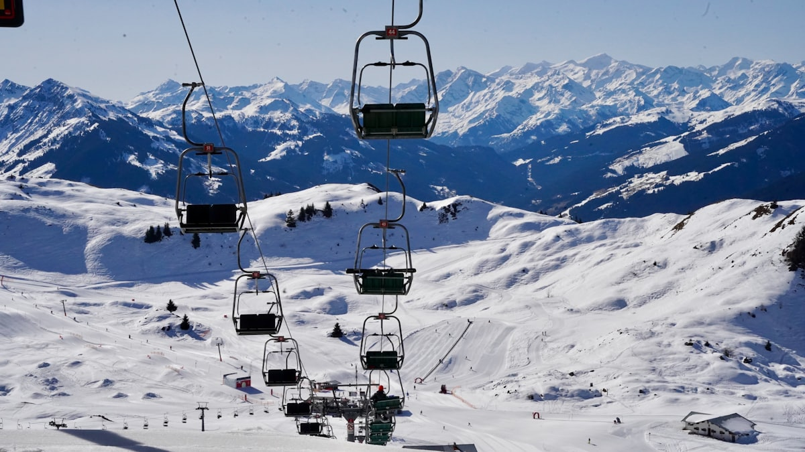
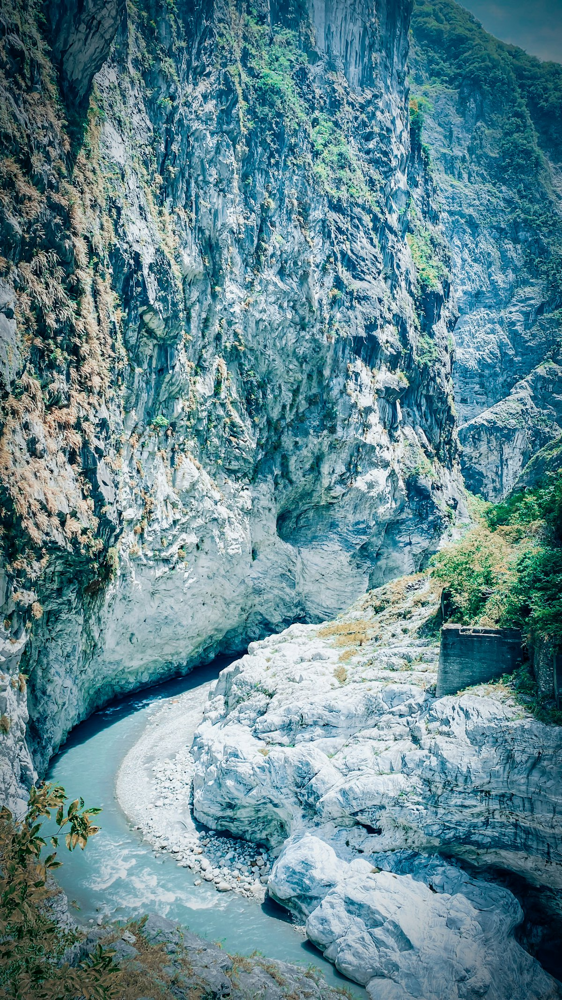

2026 · 10 天深度 · 长城 + 山庄 + 白洋淀
河北 10 天全景攻略
河北 ⇄ 各地 · 承德山庄 · 山海关 · 白洋淀
| 事项 | 结论 |
|---|---|
| 事项 | 结论 |
| 推荐方案 | 10 天 9 晚（石家庄 2 晚 + 承德 3 晚 + 秦皇岛 2 晚 + 白洋淀 1 晚） |
| 返程约束 | 第 10 天下午/晚间返程 |
| 行程链 | 石家庄 → 正定 → 承德 → 秦皇岛 → 白洋淀 → 返程 |
| 预算（人均） | 经济 2800–3800 ／ 标准 4500–6000 ／ 舒适 7500–10000 |
| 三件提前事 | ① 避暑山庄提前购票并规划路线 ② 山海关/老龙头看潮汐 ③ 白洋淀船票问清含不含船型 |
| 季节提醒 | 5–10 月最佳；夏季坝上避暑、冬季看雪景长城 |
| 交通卡 | 石家庄—承德—秦皇岛已通高铁，串联省会仅 1–3h |
以下为 10 天 9 晚的推荐节奏。前半段看皇家与古城，中段看长城与海，最后收在华北水乡，全程高铁衔接。
| 日期 | 行程 | 过夜地 | 主题 |
|---|---|---|---|
| D1 抵冀 | 抵达石家庄，宿市区，晚上逛正太里/万象城商圈 | 石家庄 | 抵达 + 省城初印象 |
| D2 | 正定古城：隆兴寺 → 四塔 → 古城墙夜景 | 石家庄 | 千年古城 |
| D3 | 高铁赴承德，入住后逛承德老街（二仙居夜市） | 承德 | 转场 + 夜市 |
| D4 | 避暑山庄（全天：宫殿区 + 湖区 + 山区） | 承德 | 皇家园林 |
| D5 | 外八庙：普陀宗乘之庙 → 普宁寺；下午高铁赴秦皇岛 | 秦皇岛 | 皇家寺庙 |
| D6 | 山海关 → 老龙头（长城入海处） | 秦皇岛 | 雄关大海 |
| D7 | 北戴河海滨：鸽子窝公园看日出 → 老虎石 → 海边浴场 | 秦皇岛 | 海滨休闲 |
| D8 | 高铁赴白洋淀，下午入淀游芦苇荡 | 白洋淀 | 华北水乡 |
| D9 | 白洋淀全天：荷花大观园 + 渔村 → 傍晚返石家庄 | 石家庄 | 水乡生态 |
| D10 返程 | 上午逛石家庄博物馆，下午返程 | — | 收尾 |
以下为 10 天全程的逐小时执行时间线，可当作「当天打开照着走」的清单。标注 ※ 的可选项视体力与天气取舍。
| 时间 | 事项 |
|---|---|
| 14:00–17:00 | 抵达石家庄（高铁至石家庄站），市区入住 |
| 17:30–19:00 | 晚餐：驴肉火烧、板面（安徽板面在石家庄极受欢迎） |
| 19:30–21:00 | 正太里 / 万象城商圈散步，石家庄老火车站夜景 |
| 22:00 | 回酒店休息 |
| 时间 | 事项 |
|---|---|
| 08:30 | 石家庄市区出发，地铁/公交/打车约 40 分钟到正定 |
| 09:00–12:00 | 隆兴寺（参考价 50 元）：「京外名刹之首」，铜铸千手观音、摩尼殿倒坐观音 |
| 12:00–13:00 | 正定古城午餐：饸饹、缸炉烧饼 |
| 13:30–16:00 | 正定四塔串游：凌霄塔、华塔、须弥塔、澄灵塔 |
| 16:30–18:30 | 古城墙漫步，傍晚看古城与滹沱河日落 |
| 19:00 | 返回石家庄 |
| 时间 | 事项 |
|---|---|
| 08:30–11:30 | 石家庄乘高铁赴承德（约 2 小时），入住市区 |
| 12:00–13:00 | 午餐：承德地方菜（平泉羊汤、莜面窝子） |
| 14:00–17:00 | 武烈河畔散步：承德避暑山庄外景 + 二仙居桥 |
| 17:30–19:00 | 二仙居夜市：杏仁茶、炸糕、烤羊腿 |
| 19:30 | 回酒店 |
| 时间 | 事项 |
|---|---|
| 08:00 | 避暑山庄开园即入园（参考价 130 元），从丽正门进入 |
| 08:30–11:00 | 宫殿区：澹泊敬诚殿（楠木殿）、烟波致爽殿，感受康熙朝政治中心 |
| 11:00–13:00 | 湖区：烟雨楼、金山、芝径云堤，仿江南水乡 |
| 13:00–14:00 | 午餐：园内简餐或自带 |
| 14:00–17:00 | 山区：乘环山游览车登高，俯瞰山庄全景与武烈河 |
| 18:00 | 出园，晚餐：承德八大碗/御膳 |
| 时间 | 事项 |
|---|---|
| 08:30–11:00 | 普陀宗乘之庙（小布达拉宫，参考价 80 元）：仿拉萨布达拉宫而建，外八庙最大 |
| 11:30–13:00 | 普宁寺（参考价 80 元）：世界最高木雕千手千眼观音（22 米） |
| 13:00–14:00 | 午餐 |
| 14:30–17:30 | 高铁赴秦皇岛（约 3 小时），入住北戴河/山海关 |
| 18:30 | 晚餐：山海关浑锅（荤锅） |
| 时间 | 事项 |
|---|---|
| 08:30–11:30 | 天下第一关·山海关（参考价 40 元）：登城楼看「两京锁钥无双地」 |
| 11:30–13:00 | 老龙头（参考价 50 元）：明长城唯一入海处，澄海楼俯瞰渤海 |
| 13:00–14:00 | 午餐：山海关海鲜/浑锅 |
| 14:30–16:30 | 角山长城（可选）或古城内看王家大院、闯关东展览 |
| 17:00 | 返回北戴河住宿 |
| 时间 | 事项 |
|---|---|
| 04:30 | 早起赴鸽子窝公园（参考价 25 元）看渤海日出（视季节 4:30–5:30 日出） |
| 08:30–10:30 | 老虎石海上公园：沙滩漫步、赶海 |
| 10:30–12:00 | 联峰山公园远眺北戴河全景（可选） |
| 12:00–13:00 | 午餐：北戴河海鲜 |
| 14:00–17:00 | 海滨浴场自由活动，或骑行滨海大道 |
| 18:30 | 晚餐后海边栈道散步 |
| 时间 | 事项 |
|---|---|
| 08:30–11:30 | 秦皇岛高铁赴保定，再转车到安新县白洋淀景区（约 3–4 小时） |
| 12:00–13:00 | 安新县城午餐：白洋淀贴饼子熬小鱼、咸鸭蛋 |
| 13:30–17:00 | 入淀：快艇/木船游芦苇荡（参考价 80–150 元/人，问清船型），看雁翎队遗迹 |
| 17:30 | 入住淀边民宿，傍晚湖上夕阳 |
| 时间 | 事项 |
|---|---|
| 08:30–11:30 | 荷花大观园（参考价 40 元，7–8 月最佳）：十里荷塘 + 观鸟 |
| 11:30–13:00 | 淀上渔村午餐：全鱼宴（炖杂鱼、鱼丸、贴饼子） |
| 13:30–16:00 | 芦苇迷宫 / 文化苑（雁翎队纪念馆） |
| 16:30–19:00 | 返回石家庄（高铁经保定转） |
| 19:30 | 入住石家庄，晚餐 |
| 时间 | 事项 |
|---|---|
| 08:30–11:00 | 自由活动：河北博物院（免费需预约）看长信宫灯、中山王墓文物 |
| 11:30–12:30 | 午餐 |
| 13:00–15:00 | 退房，赴石家庄站，返程 |
必去（必去）/ 顺路（顺路）/ 可跳过（可跳过）。

必去必去
必去
必去
顺路
顺路
顺路
可跳过图片为 Unsplash 主题图（长城、山庄、海滨、草原等河北主题），用于页面配图。更多免费去处：秦皇岛北戴河海滨浴场、正定古城墙、石家庄长安公园、承德武烈河畔。
点击左侧节点可在地图上定位；点击地图 marker 会高亮对应节点。坐标为 WGS-84 转 GCJ-02 纠偏后标注。
以下为单人、不含购物的估算；门票为参考价。省内高铁串联是核心支出，跨市段建议提前 3–5 天订票。出发地不同，往返交通差异较大。
| 项目 | 经济（2800–3800） | 标准（4500–6000） | 舒适（7500–10000） |
|---|---|---|---|
| 往返交通 | 高铁约 400–1000 | 高铁/飞机约 1000–1800 | 飞机+接送约 2500–4000 |
| 住宿（9 晚） | 青旅/快捷 800–1100 | 连锁酒店 1600–2400 | 景区度假酒店 4000–5500 |
| 门票 | 核心景点约 300 | 含山庄+长城+白洋淀船约 500 | 全含+演艺约 800 |
| 餐饮（10 天） | 600–900 | 1300–1600（含海鲜与全鱼宴） | 2200–2800（特色宴席） |
| 省内交通 | 高铁+公交 300–500 | 高铁+打车 600–800 | 包车 1200–2000 |
带娃主推：承德避暑山庄 + 白洋淀游船 + 北戴河玩沙看海，节奏放缓；避暑山庄坐环山车、白洋淀选快艇短程，减少步行量。7–8 月坝上草原也适合亲子骑马。
12–2 月：山海关老龙头看「雪拥雄关」、北戴河看冰海，承德山庄雪景如画；人少价低，但海滨与白洋淀部分项目停运，适合纯看雪 + 古建。
| 方式 | 时长 | 参考价 | 备注 |
|---|---|---|---|
| 高铁（推荐） | 北京 30 分钟–2h，其余视出发地 | 二等座 60 元起 | 石家庄/承德/秦皇岛均有高铁站 |
| 飞机 | 视出发地 1–3h | 400–1800 元 | 石家庄正定机场，高铁接驳 |
| 自驾 | 视出发地 | 高速+停车费 | 河北高速网发达，山区注意限速 |
| 区域 | 价格/晚 | 优点 | 短板 |
|---|---|---|---|
| 石家庄市区 | 快捷 250–400 / 星级 500–900 | 高铁枢纽，交通便利 | 城市景观一般 |
| 承德市区 | 快捷 250–400 / 山庄旁 400–800 | 近避暑山庄与外八庙 | 旺季房源紧张 |
| 秦皇岛（北戴河） | 民宿 300–500 / 海景 600–1200 | 近海、度假氛围浓 | 7–8 月价格翻倍 |
| 白洋淀淀边 | 民宿 250–450 | 近水乡，渔家饭香 | 设施相对简单 |